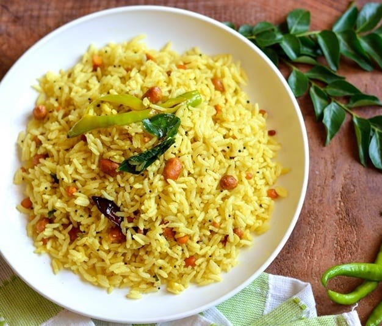

I enjoy reading and learning about human psychology. I dislike it when people become overly passionate about trivial issues. I admire people that are emotionally strong. To excel at anything, I purely depend on my capacity to work hard. If I'm in good enough form I like to help strangers with their concerns. When talking with others, I am generally good with my word choice. People are inclined to trust me. It's difficult for me to know when to give up on something.
I love Pulihora a lot because of its taste, texture and bright yellow color. It's made of Rice, Lemon, and groundnuts, all together brings a mouthful of water. It tastes sour and soft which feels awesome while eating. It can be prepared with Lemon or Tamarind but I prefer the prior one.
